≡
Tabel
Daftar lengkap — cari, saring, urutkan.
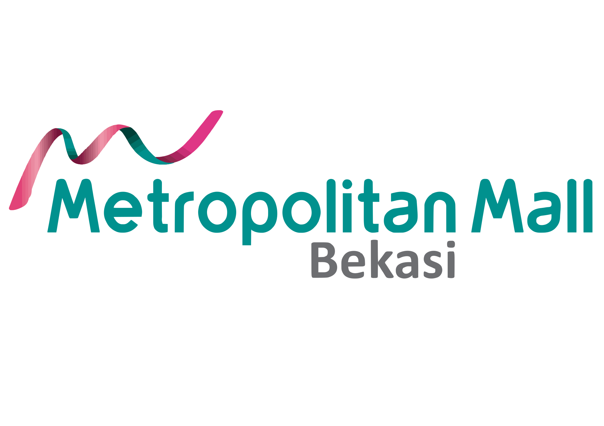
Metropolitan Mall BekasiLaporan Kerja Marcomm · Metropolitan Mall Bekasi
Saya membangun sistem pengelolaan seluruh event mall — dari pengajuan komunitas, penjadwalan, publikasi, sampai evaluasi. Sudah berjalan penuh di metmalcommunityspace.web.id, dipakai setiap hari oleh tim marcomm.
Titik Awal
Setiap kegiatan punya caranya sendiri — hasilnya kerja dua kali dan informasi yang hilang di tengah jalan.
Bukti Pemakaian
Angka berikut diambil langsung dari basis data sistem pada hari ini — bisa dicek ulang kapan saja.
Komunitas paling aktif: Sanggar Tari Srikandi (14 event), Happy Play Kids (11), LDAI (9). Status setiap event — mendatang, berlangsung, selesai — dihitung otomatis dari tanggal, tanpa perlu diperbarui manual.
Fitur · Pengunjung & Komunitas
Semua halaman ini terbuka tanpa perlu akun — pengunjung cukup membuka situs.
/eventsSeluruh event mall, lengkap dengan filter kategori dan unduhan jadwal dalam format PDF.
/daftarForm resmi pengajuan event beserta unggah proposal — tidak lagi lewat chat.
/communityPortofolio setiap komunitas beserta rekam jejak acaranya di mall.
/galleryDokumentasi setiap event dan kondisi area — bisa dilihat siapa saja.
/sponsorPenawaran kerja sama bagi calon sponsor, lengkap dengan formulir kontak.
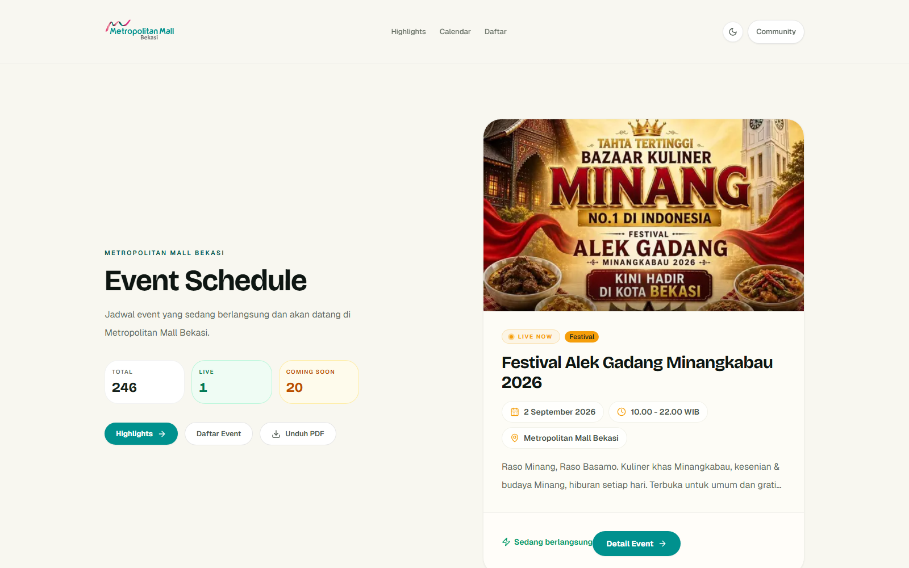
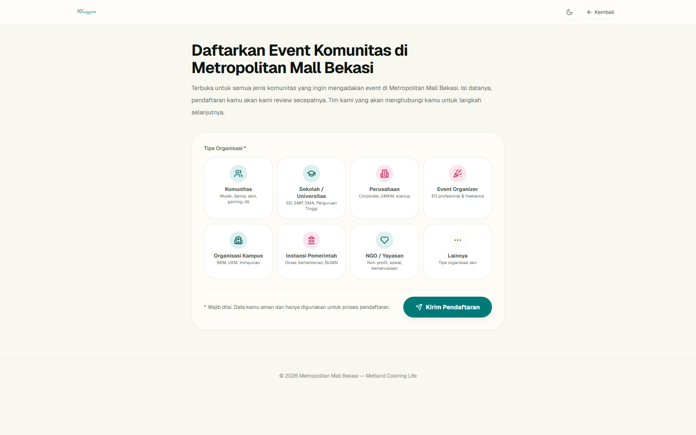
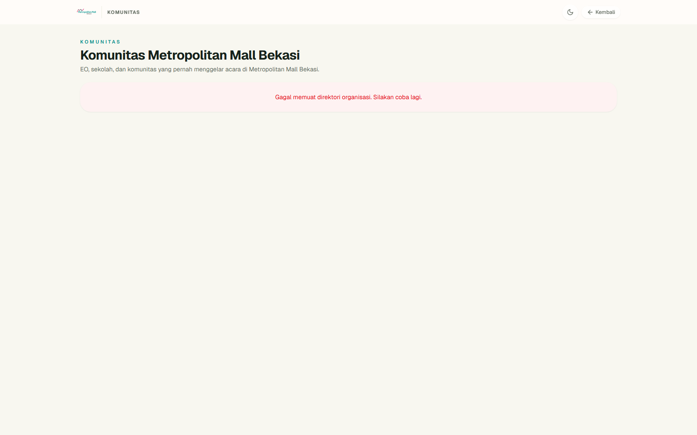
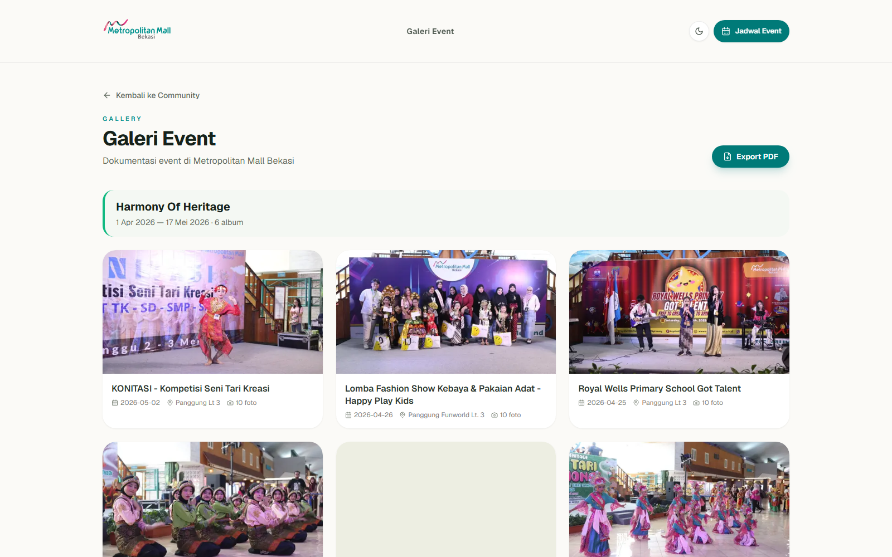
Fitur · Tim Internal
Satu data yang sama bisa dilihat dalam empat bentuk — sesuai kebutuhan saat rapat maupun perencanaan.
Daftar lengkap — cari, saring, urutkan.
Bulan mana yang padat, terlihat sekali lirik.
Acara berjalan sesuai tahap: mendatang, berlangsung, selesai.
Rentang setiap acara dalam setahun — tabrakan jadwal langsung terlihat.
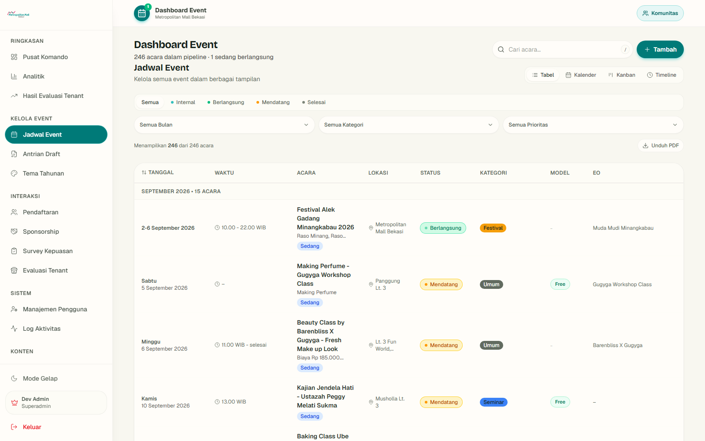
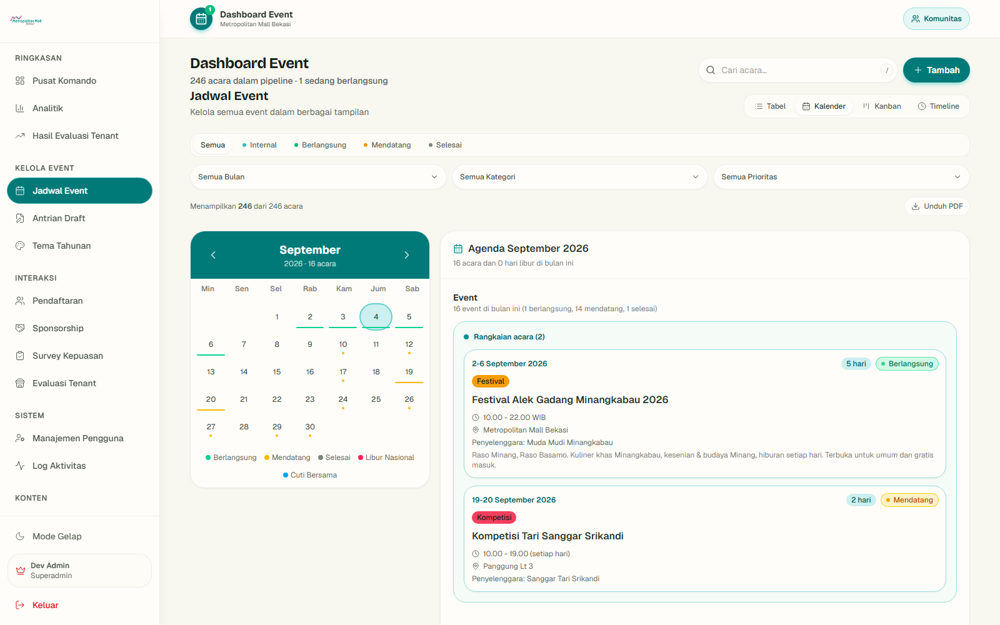
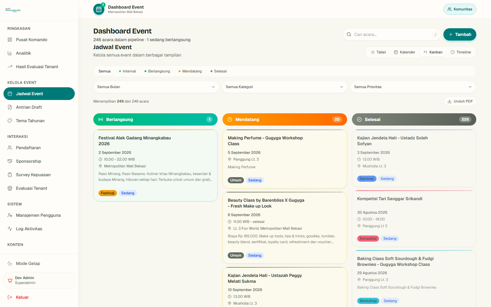
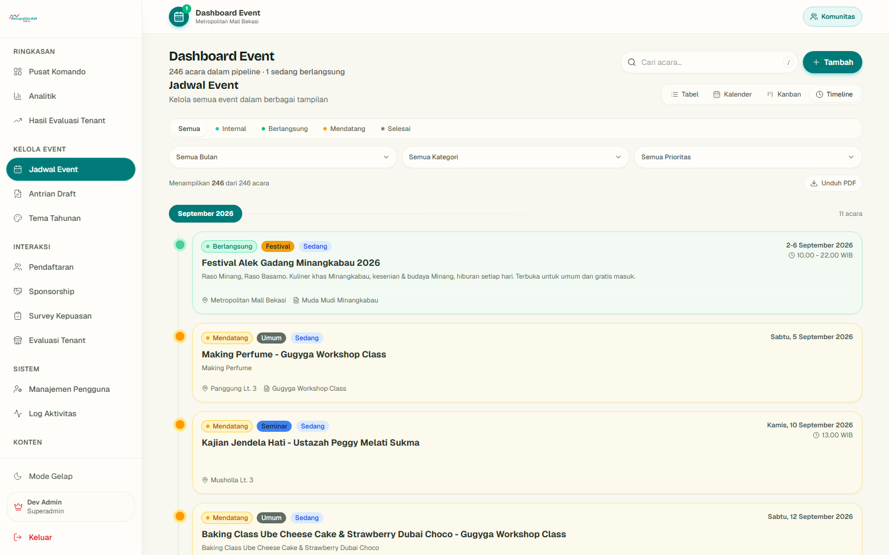
Alur Kerja
Tahapan berpindah otomatis mengikuti tanggal — mendatang, berlangsung, lalu selesai — tanpa diperbarui manual.
Sedang DibangunPurwarupa
Setelah acara selesai, penyewa gerai mengisi survei singkat: apakah kunjungan dan penjualan gerainya naik. Hasilnya terkumpul otomatis — masih tahap purwarupa, belum dibuka untuk produksi.
Penyewa membuka tautan, memilih acara dan gerainya, mengisi skala kenaikan — selesai tanpa perlu login.
Hasil seluruh gerai terkumpul jadi rekap terbuka: seberapa besar dampak acara terhadap kunjungan dan penjualan.
Setiap perangkat hanya bisa mengirim satu kali per acara, dengan pembatasan laju kirim di sisi server.
Data dampak acara jadi bahan evaluasi dan negosiasi sponsorship dengan penyewa — tanpa rekap manual.
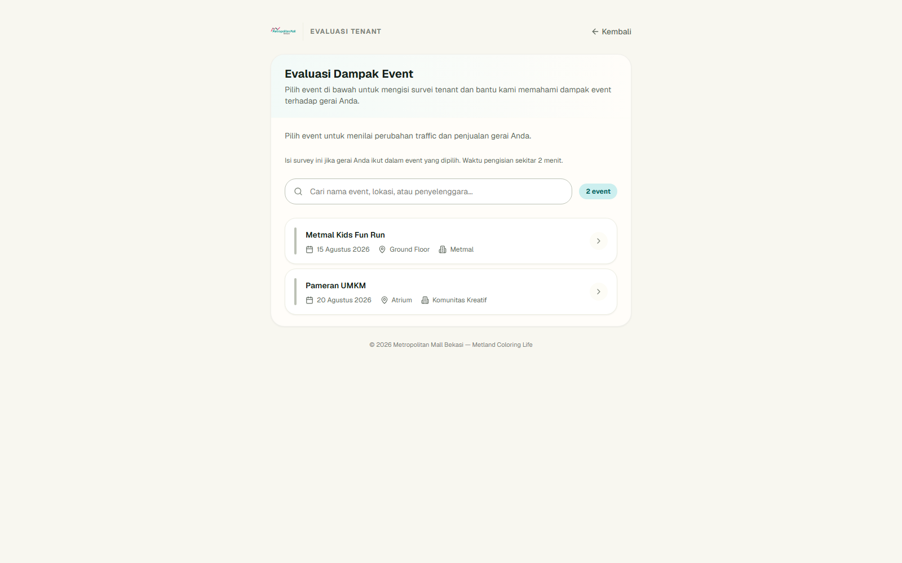
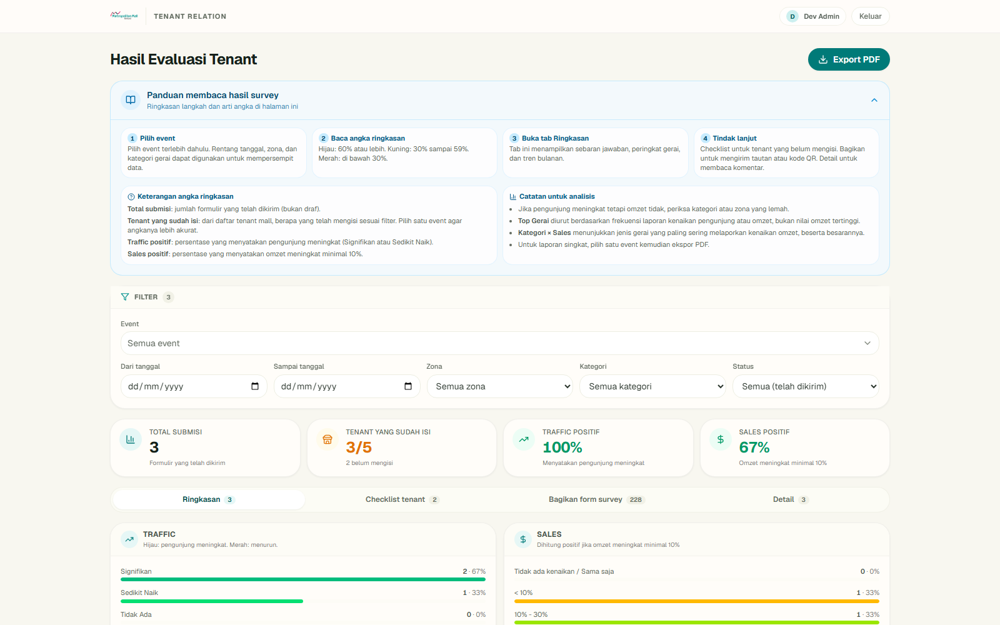
Sebelum vs Sesudah
Keandalan
6 jenis tindakan tercatat otomatis — siapa membuat, mengubah, menghapus, masuk, keluar — lengkap dengan waktu dan alamat jaringan. Tidak ada perubahan yang lolos tanpa jejak.
367 pemeriksaan otomatis berjalan setiap kali sistem berubah — status event, hak akses, formulir — ditambah 17 skenario uji penggunaan nyata di peramban.
Setiap pengguna hanya melihat bagian yang menjadi wewenangnya — pemimpin, penyunting, pemantau, hingga penyewa gerai. Data sensitif penyewa tidak pernah tampil di halaman publik.
Status acara selalu dihitung ulang dari tanggal, bukan diketik manual — sehingga tidak pernah ada acara yang sudah selesai tapi masih tertulis berlangsung.
Rencana Lanjutan
Urutan menurut kebutuhan operasional — yang paling dekat manfaatnya bagi tim dan penyewa gerai.
Penutup
Seluruh pekerjaan event — pendaftaran komunitas, penjadwalan, publikasi, dokumentasi, hingga evaluasi — kini berjalan dalam satu sistem yang dipakai setiap hari. Silakan buka dan coba langsung.